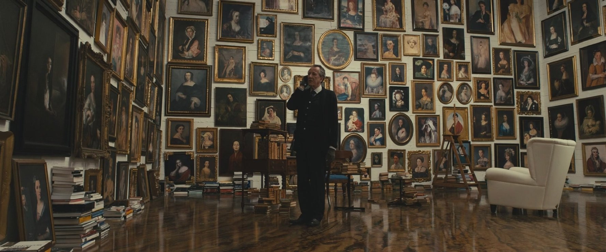
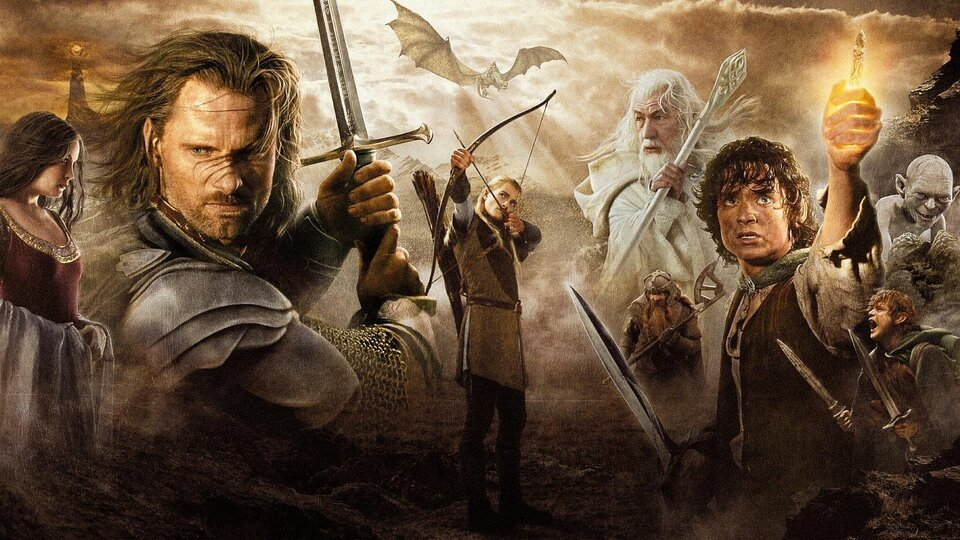
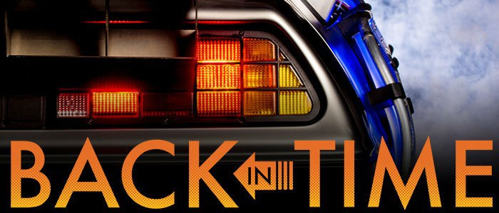
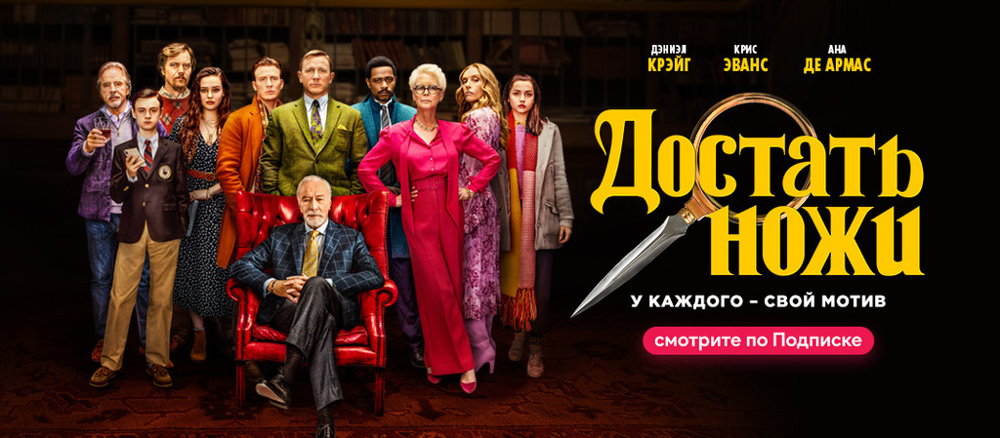
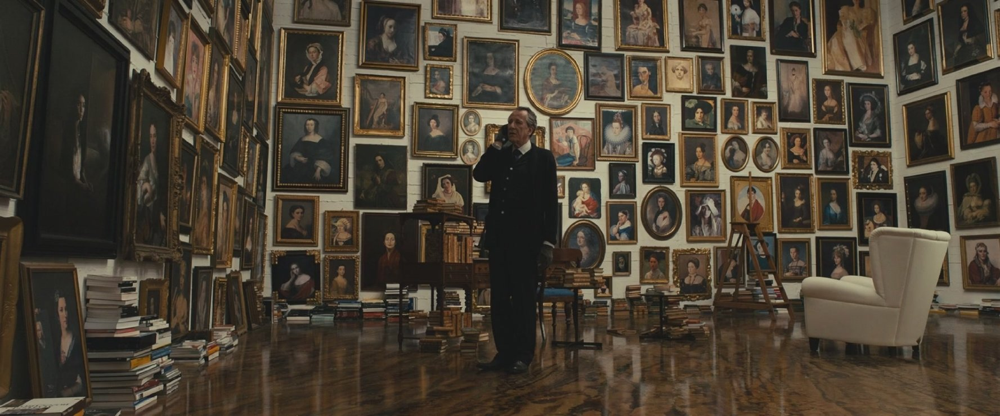
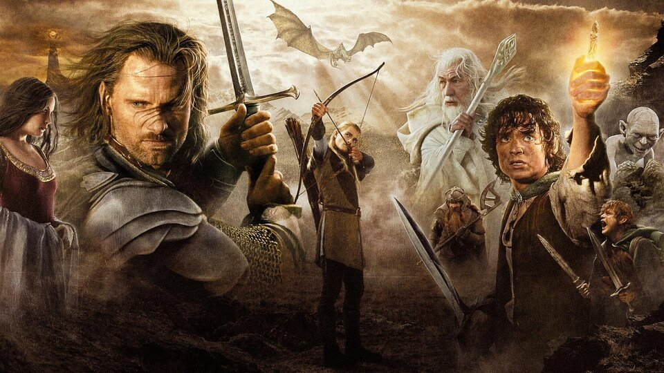
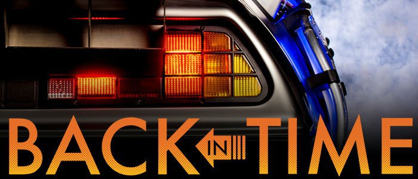
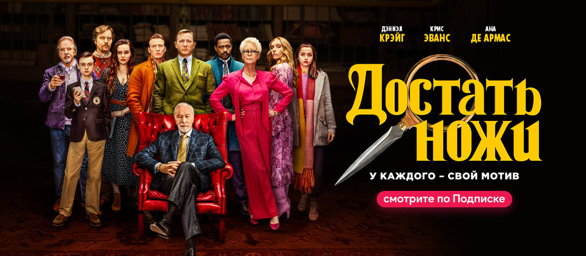
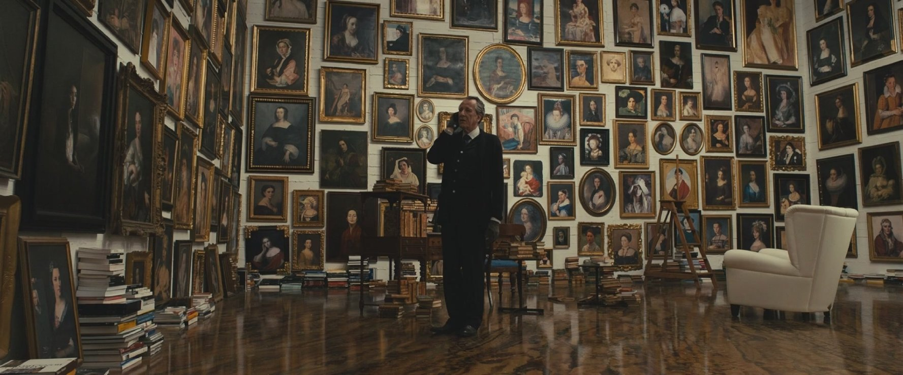
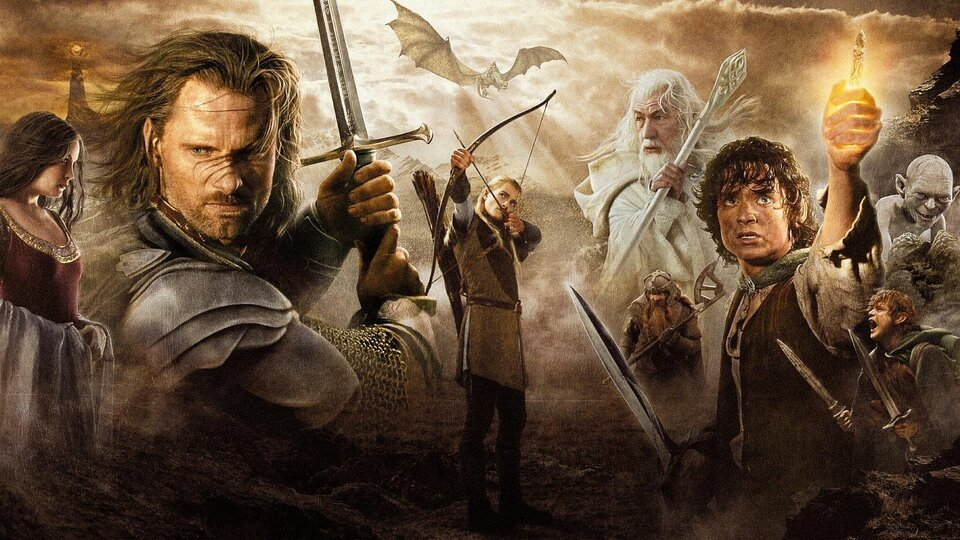
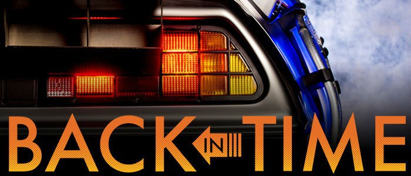
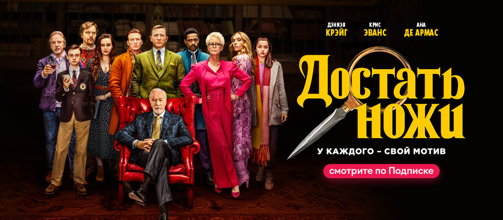
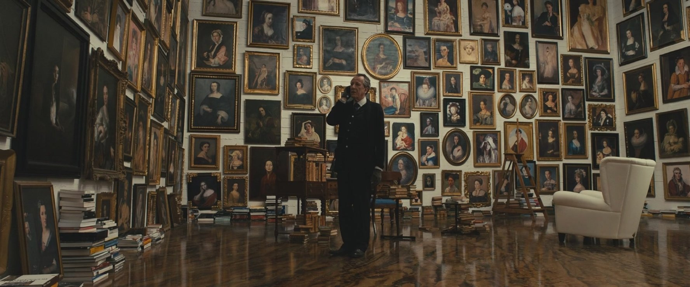
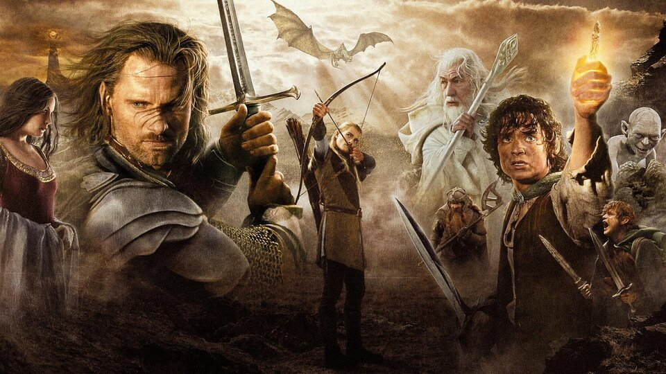
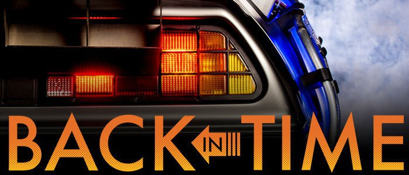
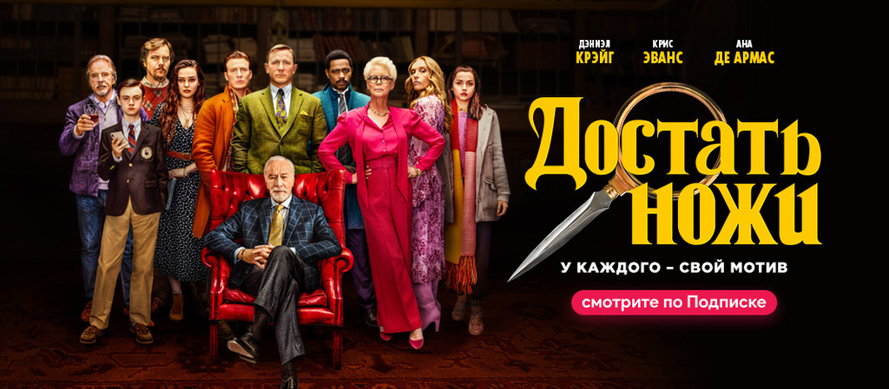
Адріан Дорія - молодий бізнесмен, якого звинувачують у вбивстві своєї коханки Лаури Відал. Він не визнає свою провину і до суду утримується під домашнім арештом. Його юрист Фелікс наймає для нього адвоката Вірджинію Гудман, для якої це остання справа в кар'єрі, і вона не збирається її програвати. Увечері перед судом Вірджинія приходить до Адріана, щоб придумати найкращу стратегію для захисту. Вона каже, що у них є три години, і просить Адріана розповісти все, як було. Адріан розповідає Вірджинії, як він і Лаура, отримавши анонімне повідомлення від шантажиста, зустрілися в готелі далеко від міста, проте зрозуміли, що це пастка, і спробували піти. Адріана хтось вдарив, і він знепритомнів. Коли він приходить до тями, то виявляє, що Лаура мертва і всі гроші, призначені для шантажиста, розкидані по ванній. Коли прибуває поліція, виявляється, що двері кімнати замкнені зсередини, вікна теж заблоковані. Ніхто не міг би увійти в кімнату і залишитися непоміченим. Тому Адріан - єдиний підозрюваний у вбивстві Лаури. Але Вірджинія наполягає на тому, що Адріан розповідає їй не всю історію, і щоб допомогти йому, вона повинна знати всю правду. Тоді Адріан розповідає про свою ділову поїздку в Париж. Насправді він не поїхав до Парижа, а був на побаченні з Лаурою. На зворотному шляху на заміській дорозі відбувається аварія і, хоча з ними все в порядку, молодий чоловік на ім'я Даніель Гаррідо, водій машини, що з ними зіткнулася, гине. Лаура вирішує, що це не їх вина, оскільки Даніель листувався за кермом по телефону і не пристебнув ремінь безпеки. По дорозі проїжджає інший автомобіль, який зупиняється, щоб запропонувати допомогу. Лаура бере мобільний Даніеля, який у цей час дзвонить, щоб водій, що викликався допомогти, нічого не запідозрив; вони роблять вигляд, що зіткнулися один з одним, і допомога не потрібна. Лаура вмовляє Адріана позбутися машини і тіла Даніеля, адже на карту поставлено майбутнє і Адріана, і Лаури. Адріан погоджується і з тілом у багажнику їде машиною загиблого, уже в темряві зіштовхуючи її в місцеве озеро.
Здавалося б, сюжет детектива «Ножі наголо» не відрізняється особливою новизною: в день 85-річчя патріарха великої родини, а за сумісництвом багатія і автора детективних романів Харлана Тромбрі, знаходять мертвим з ножем у грудях. Він зібрав свою велику сім'ю, яка роздирається сварками в своєму маєтку, щоб всіх помирити, але сталося все зовсім не так, як хотів старий. До розслідування підключається поліція, але також і приватний детектив Бенуа Блан в блискучому виконанні цієї ролі актором Деніелом Крейгом ... І ось тут-то і починаються цікаві речі, оскільки і сам детектив досить незвичайний, і підозрює він всіх - від служниці з Латинської Америки до дивовижного онука-активіста, від старшого сина, який займався бізнесом з продажу авторських прав батька і постійно з ним сперечався, до навіть онуки, учениці коледжу. І все це пройняте дуже своєрідним гумором, який характерний для фільмів режисера Раяна Джонсона. Так що детектив цей незвичайний, і пошуки вбивці обов'язково доставлять задоволення глядачам.
Фільм розповідає про незвичну історію кохання у світі аукціонів та антикваріату. Історія розвивається навколо ексцентричного директора дому аукціонів і, водночас, відомого мистецтвознавця та реставратора Верджела Олдмана (Джеффрі Раш), котрий зацікавився молодою та загадковою клієнткою Клер Ібетсон (Сільвія Гукс), батьки якої померли і залишили після себе колекцію творів мистецтва та антикваріату. Клер боїться відкритого простору і нікому не показує свого обличчя. Поступово Верджел починає закохуватися у свою клієнтку
Оповідач (Едвард Нортон) працює лінійним службовцем компанії-виробника автомобілів, обов'язками якого є оцінка вартості відкликання партій продукції у випадку аварій. Унаслідок постійного стресу на роботі та частого пересування між часовими поясами, герой страждає на хронічне безсоння, через що звертається до лікаря, який рекомендує йому відвідувати групу психологічної підтримки для осіб, що перенесли хірургічне лікування раку яєчок — це має допомогти йому зрозуміти, чим є справжні страждання. Відвідування групи справляє позитивний вплив на Оповідача: він має можливість плакати, і це катарсичне переживання допомагає йому позбутися безсоння. Згодом, удаючи хворого, він записується до інших груп підтримки, доки не стикається з жінкою на ім'я Марла Сінґер (Гелена Бонем Картер), яка веде аналогічний спосіб життя. Після цієї зустрічі герой припиняє відвідувати групи, до нього повертається безсоння. У літаку, повертаючись із відрядження, Оповідач знайомиться з Тайлером Дерденом (Бред Пітт), який торгує власноруч виготовленим милом. Повернувшись додому, Оповідач знаходить свою квартиру знищеною вибухом газу (як виявиться пізніше, Оповідач сам влаштував вибух, щоб вирватися із консумерського світу і стати сквотером). Зателефонувавши Тайлеру, він зустрічається з ним у барі. Тайлер дозволяє Оповідачеві жити в нього, але раптом просить, щоби той його вдарив. Оповідач погоджується, і між героями стається перша бійка на вулиці перед баром. Оповідач переїжджає до напівзруйнованого будинку, в якому мешкає Тайлер. Згодом вони повертаються до бару і влаштовує ще одну бійку на автостоянці, що приваблює натовп людей. Залучивши охочих глядачів, приятелі влаштовують «бійцівський клуб» у підвалі бару. Незабаром у країні за допомоги Тайлера відкриваються інші численні бійцівські клуби. Тайлер рятує Марлу від передозування заспокійливим, і між ними виникає сексуальний зв'язок. Утім, з невідомої причини, Тайлер просить Оповідача ніколи не згадувати його у розмовах із Марлою. Тим часом, під проводом Тайлера мережа бійцівських клубів перетворюється на секретну організацію «Проєкт „Розгром“», яка чинить у місті акти вандалізму, спрямовані проти панівного класу суспільства. Оповідач відходить від діяльності «Проєкту». Після сварки з ним Тайлер зникає безвісти, а згодом, коли один з учасників проєкту гине, Оповідач намагається згорнути руйнівну активність. Вистежуючи сліди Тайлера, герой подорожує країною і з'ясовує, що бійцівські клуби функціонують у всіх містах. Раптом один із членів клубу впізнає в ньому Тайлера Дердена. Після телефонної розмови з Марлою Оповідач починає розуміти, що Тайлер насправді є частиною його власної роздвоєної особистості. З'явившись перед Оповідачем, Тайлер пояснює, що контролює його дії, коли той спить.
Джон Уік — колишній найманий вбивця, що вже давно зав'язав зі своїм минулим. До того дня, коли один з членів мафіозі вирішив привласнити його улюблений Mustang 1969. Під час викрадення він вбиває собаку Дейзі — посмертний подарунок дружини Джона.
У фільмі розповідається про дитинство Брюса Вейна та становлення Бетмена як Темного лицара міста Ґотема. Граючись з дівчинкою Рейчел, восьмилітній Брюс, син батьків-мільярдерів, падає в глибокий колодязь. Там на нього налетіла велика зграя кажанів. Цей випадок поселив у хлопчика фобію до кажанів. Через декілька днів після цієї пригоди, батько Брюса вирішує сходити до театру разом з жінкою та сином. У театрі хлопчику стало зле та батьки вирішують піти додому. На виході з театру на сім'ю нападає злочинець Джо Чіл, який застрелює на очах у хлопця матір та батька. Скоро злочинця арештовують, але втрата батьків стає вирішальною у подальшій долі Брюса. Минають роки, Брюс Вейн став дорослим. Вбивцю його батьків було відпущено в обмін на інформацію проти шефа Ґотемівської мафії, Фальконе. Вейн замислює його застрелити, але його випереджає кілер від Фальконе. Спершу Вейн навіть вирішує віддячити гангстеру, але поговоривши з Рейчел він розуміє, що хоча батьків убив не Фальконе, проте саме такі люди винуватці багатьох смертей, напливу наркотиків та злочинності в місті. Брюс подорожує світом, намагаючись забути біль від втрати батьків та знайти відповідь на питання чи є у світі справедливість. Нарешті, в одній китайській в'язниці до нього приходить людина на ім'я Анрі Дюкард, який пропонує Брюсу вступити до таємного ордену «Ліга Тіней». Цей орден бореться проти несправедливості та зла. Очолює його Рас аль Гул. Вейн погоджується та долає багато труднощів, щоб дістатися до місця знаходження храму цієї «Ліги». На місці він навчається майстерності в рукопашному бою, джиу-джитсу, ніндзюцу та філософським наукам задля розуміння добра і зла. Проте, Брюс так і не зміг подолати свій страх перед кажанами, а також почувається винним у смерті батьків, бо саме він попросився вийти з театру. Його наставник та вчитель Дюкард говорить Брюсу, що єдине, що зараз допоможе йому — помста. Як приклад, вчитель наводить те, що він сам убив людину, котра позбавила життя його дружину. Вейн стверджує, що йому це вже не допоможе.
Досвідчений шахрай бере молоду привабливу дівчину під своє крило, але все ускладнюється, коли у них починаються романтичні стосунки.